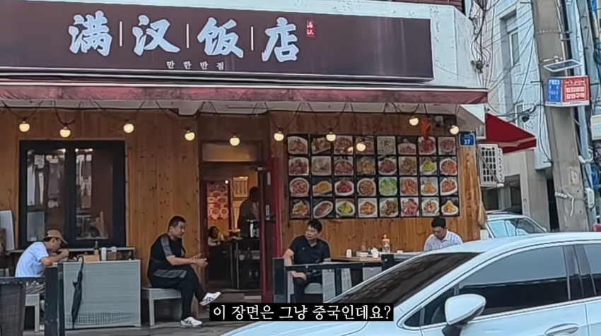
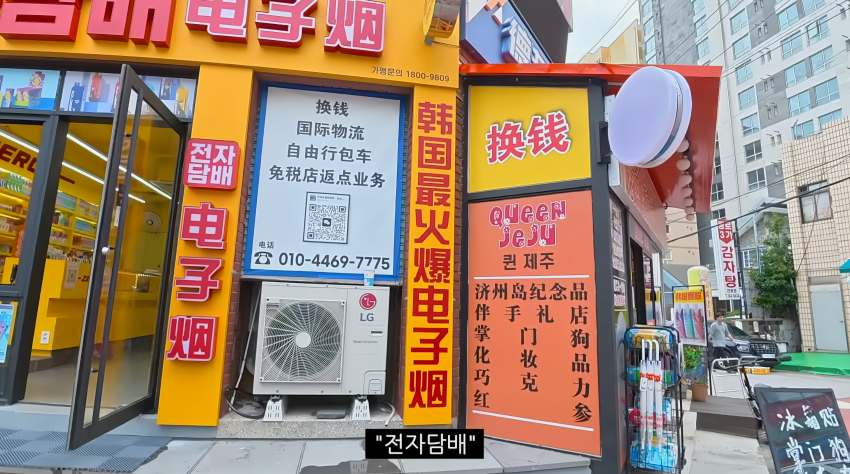
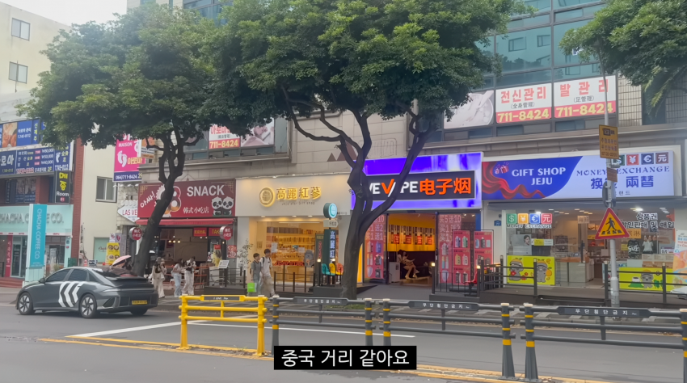

뭐 중국이네 그냥



뭐 중국이네 그냥
무비자여행 20년이야
우리 비자 없이 갈 수 있는나라 꽤 많은데...?
여권은 있어야 하는거고 비자는 없어도 되는데 많아
한국여권이 깡패인 이유가 무비자로 여행 갈 수 있는 나라가 세계에서 손꼽을 정도로 많아서인데....
해외 한 번도 안가본 졷밥인가보네..
미국도 비자 없이 가는데 무슨 일본이 비자야
그냥 길거리 안내판만 봐도 죄다 한자 들어가있어서 거부감이 들긴 하더라
짱92874깨들 자기들끼리 장사해서 내수에 도움도 안 되는거 모르네
관할시나 비행기 등 대기업 이해관계자들만 돈범 내수는 크게 영향 못주는건 사실
당연한거 아닌가? 우리가 베트남 다낭에 가봐도. 경기도 다낭시라고 할 정도로. 한글 간판부터 한국사람상대의 가게들이 전부잖아? 한국 관광객들이 많이오니 돈을 벌기위해 저렇게 하는것이지. 아마 가게 일하는 사람들 간단한 중국어 정도는 능숙하게 할걸? 우리나라 사람들도 다낭가서 일부겠지만 현지사람 무시하고 성매수같은거나 술마시고 선진국사람이라고 자기가 뭐나 되는거처럼 행동하는것처럼 중국 사람들도 제주도와서 그런 사고 많이치겠지 당연한거야. 물론 시진핑개쉐가 맞지 ㅋ 그리고 카지노도 맞을듯 카지노에 90퍼는 중국놈들임 도박 담배 엄청 좋아라함 남녀노소불문 생긴거만봐도 때놈이요라고 생겼음 스타일이
그래서 저거 냅두면 전부다 중국 식당 되버리면 제주도는 한국식당 없어져도 된다는거???
아니 자영업자 맘이지 돈벌어야하는데 한국문화체험을 원하는 중국인들은 한식먹겠지. 우리가 외국 나가서 현지음식 먹다가도 한번정도는 한식먹어주자나. 위의 내용처럼 제주도에 예를 들어 중국사람이 70퍼 한국사람30퍼 이러면 식당하는 자영업자로서. 어느나라 사람을 상대로 장사를해야 집에 생활비주고 아이들 먹이고 입히고 학교보내고 할까? 당연한 이치지.
간단한 한국어 하는수준이 아니라 짱1깨가 짱1깨 상대로만 영업하니 문제지.. 짱1깨는 여행와서도 조직적으로 짱1깨가 영업하는 곳만가서 돈쓰고 국내경제에 도움도 안됨.. 치안악화는 덤이고.
아.. 저 매장들이 한국사람들이 운영하는곳이 아니고 중국사람들이 운영하는곳이야? 흠.. 그럼 충격인데.
근데 다낭에도 한국사람이 운영하는 가게 많긴 해
맞아 직원들은 베트남 사람이고 마사지나 한식당들 좀 고급래스토랑은 한국사람임
그럼 머 제주도도 다낭처럼 된 거네 뭐
안좋은걸까?. 베트남 사람들이 한국관광객들 다낭 나짱 뿌쿽 이런데 많이와서 싫어할까?
난 딱히 안 좋은 건 아니라고 생각해. 그냥 어떤 관광지가 세계화되면서 겪는 당연한 수순이지.
제주 사는 1인인데 우리동네에 저런 매장 하나도 없고 진짜 관광객들 많이 오는 곳에 몇개 모여 있고 그런 정도를 졸라 과장해서 짜깁기 해놨네. 인터넷 렉카 대단하다.
그럼 명동도 중국땅인거야...?
인천 차이나타운까지 안가도 명동이 제주보다 훨씬 심할텐데.
진짜 ㅂㅅ같이 단순한 애들 졸라 많네
명동은 일본땅
ㅇㅇ 저기 연동 신라스테이 근처임
주변 시내 면세점 때문에 중국계는 물론 외국인 관광객들 버스로 내려놓는 곳이라 저런데 많음 (+ 감귤 굿즈 샵 같은거)
단순해야 렉카가 잘 먹히고.. 무한반복 ㅋㅋㅋㅋ
우리도 일본가는데 비자는 있어야하지않아?
비자없으면 걍 중국땅아님? ㅋㅋㅋ